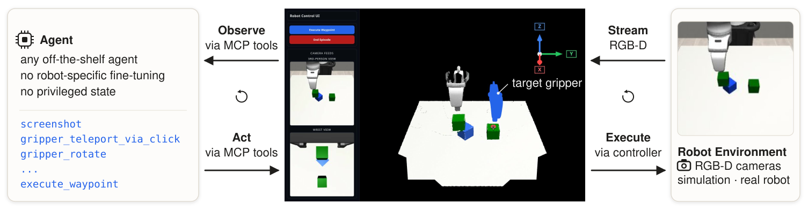
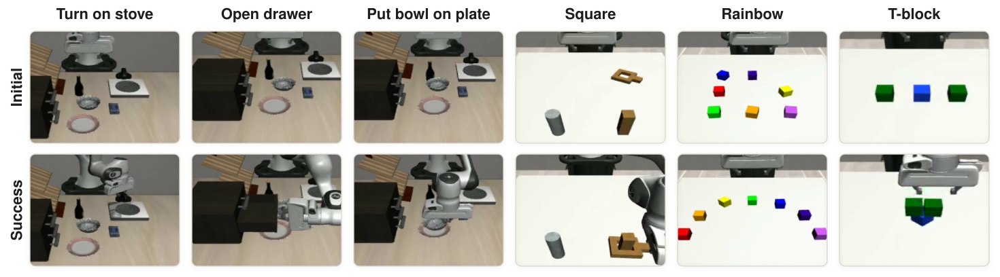
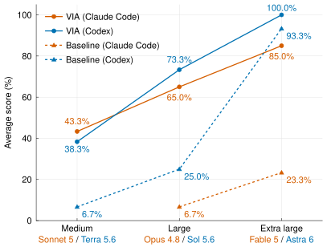
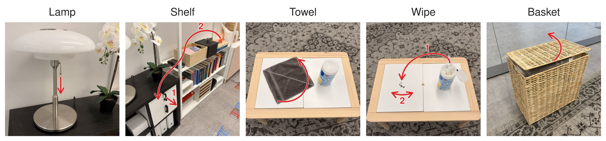

Your coding/computer-use agent is secretly a robot control agent.

execute_waypoint to invoke a simple PI
(Proportional-Integral) controller that moves the real gripper to that pose.
This observe-act loop repeats until the agent calls end_episode.
In simulation, the UI reconstructs the 3D scene from RGB-D cameras; in the
real world, where depth is sparse and noisy, the target gripper is
rendered on top of the raw camera feeds instead. The Example MCP Tools section below
documents and illustrates the main tools.
Videos showing episodes of VIA completing different tasks zero-shot, with Claude Code Fable 5 in simulation and Codex Astra 6 on the real robot.
Highlights
We evaluate VIA on six tabletop manipulation tasks with a Franka Panda arm in robosuite, drawn from different benchmarks and together covering manipulation, physical reasoning, long-horizon planning, and precise execution.

We use Claude Code (CC) and Codex as agents, each with three model tiers, to measure how VIA scales with the strength of the underlying model:
All agents run at xhigh reasoning effort. On top of a shared
system prompt on how to use the interface, each task comes with a simple
prompt that states only the task description and success condition. We
evaluate every agent-model configuration over 10 seeds per task with varying
initial object placements, and cap each episode at one hour of wall-clock
time (two hours for Rainbow). Memory, internet search, and file access are
disabled, so the agents can neither gain cross-episode experience nor read
the simulator's source.
To isolate the benefit of VIA, we compare against a naive baseline that uses the same observations, agent, and controller but has no interface: it must issue commands to the controller for immediate execution, without probing and iterating in the virtual workspace. We also study a VIA-detailed variant whose task prompts add hand-written instructions with example lists of waypoints.

| Task | Sonnet 5CC · medium | Opus 4.8CC · large | Fable 5CC · extra large | Terra 5.6Codex · medium | Sol 5.6Codex · large | Astra 6Codex · extra large | |
|---|---|---|---|---|---|---|---|
| Turn on stove | 70% | 100% | 100% | 70% | 100% | 100% | |
| Open drawer | 40% | 70% | 90% | 30% | 80% | 100% | |
| Put bowl on plate | 50% | 60% | 100% | 70% | 100% | 100% | |
| Square | 30% | 70% | 80% | 0% | 30% | 100% | |
| Rainbow | 70% | 80% | 100% | 50% | 100% | 100% | |
| T-block | 0% | 10% | 40% | 10% | 30% | 100% | |
| Overall | 43.3% | 65.0% | 85.0% | 38.3% | 73.3% | 100.0% |
Success rates over ten seeds per task. The Overall row averages the six tasks. Per-task numbers of the baseline are in the paper's appendix.
VIA solves diverse manipulation tasks zero-shot. Even the medium models reach around 40% success, and the high success rates on Turn on stove and Open drawer show that VIA handles articulated objects beyond simple pick-and-place. On Rainbow, the agents always plan carefully before moving any block, choosing the ordering, and even the direction of the arc, that needs the fewest moves. T-block remains challenging for all but Astra 6: every agent works out that the bottom block must be rotated by 45 degrees to increase the contact area, but most fail to place the green blocks within the roughly 8 mm tolerance of the task.
VIA scales with the capacity of the underlying model. Success improves from 43% to 85% across the Claude Code tiers and from 38% to a perfect 100% across the Codex tiers, with no fine-tuning: VIA benefits directly from the scale of the models it runs on.
VIA greatly outperforms the baseline. Without the interface, the same agents perform poorly in every configuration except Astra 6, where the interface still lifts the score from 93% to 100%. The strong baseline result of Astra 6 is consistent with recent demonstrations of zero-shot robot control with it; comparing across models quantifies this step change and shows how poorly prior frontier models do without VIA.
Default versus detailed prompts. VIA can also improve without any gradient-based training, for example by optimizing its prompts. As a case study, we manually write detailed instructions for five tasks explaining how we would complete them with the interface, including example lists of waypoints, and feed them to the large configurations (CC Opus 4.8 and Codex Sol 5.6) as additional prompts.
| Task | DefaultCC · Opus 4.8 | DetailedCC · Opus 4.8 | DefaultCodex · Sol 5.6 | DetailedCodex · Sol 5.6 | |
|---|---|---|---|---|---|
| Turn on stove | 100% | 100% | 100% | 80% | |
| Open drawer | 70% | 100% | 80% | 70% | |
| Put bowl on plate | 60% | 100% | 100% | 100% | |
| Square | 70% | 60% | 30% | 80% | |
| T-block | 10% | 20% | 30% | 40% | |
| Avg. | 62% | 76% | 68% | 74% |
Success rates over 10 episodes per task; bold marks the higher rate within each agent, including ties.
The instructions help modestly, improving the average success rate by 14% for CC Opus 4.8 and by 6% for Codex Sol 5.6. The remaining failures vary from task to task: T-block failures are primarily due to imprecise perception and execution, while Sol 5.6's drawer failures come from opening the wrong drawer, which the instructions do not specifically emphasize. Having the agents review their own failures and optimize their prompts may be a more promising direction than writing instructions by hand.
| Task | Sonnet 5CC · medium | Opus 4.8CC · large | Fable 5CC · extra large | Terra 5.6Codex · medium | Sol 5.6Codex · large | Astra 6Codex · extra large | |
|---|---|---|---|---|---|---|---|
| Turn on stove | 84 | 36 | 39 | 46 | 48 | 16 | |
| Open drawer | 117 | 47 | 38 | 91 | 33 | 19 | |
| Put bowl on plate | 174 | 59 | 53 | 72 | 52 | 34 | |
| Square | 81 | 92 | 69 | — | 87 | 42 | |
| Rainbow | 271 | 159 | 143 | 175 | 208 | 136 | |
| T-block | — | 81 | 89 | 162 | 109 | 59 | |
| Overall | 146 | 79 | 72 | 109 | 90 | 51 |
| Task | Sonnet 5CC · medium | Opus 4.8CC · large | Fable 5CC · extra large | Terra 5.6Codex · medium | Sol 5.6Codex · large | Astra 6Codex · extra large | |
|---|---|---|---|---|---|---|---|
| Turn on stove | $2.8 | $4.1 | $8.9 | $1.1 | $2.5 | $1.0 | |
| Open drawer | $4.8 | $7.4 | $7.5 | $2.8 | $1.0 | $1.3 | |
| Put bowl on plate | $5.8 | $7.5 | $11.8 | $1.9 | $1.7 | $2.5 | |
| Square | $2.8 | $12.5 | $14.1 | — | $3.5 | $2.8 | |
| Rainbow | $10.2 | $26.0 | $36.1 | $1.6 | $4.5 | $7.6 | |
| T-block | — | $9.7 | $19.2 | $4.9 | $3.8 | $3.7 | |
| Overall | $5.3 | $11.2 | $16.3 | $2.4 | $2.8 | $3.2 |
Means over successful episodes of the default-prompt evaluations above; we omit failed episodes because the agents often keep trying until the time limit. "—" marks configurations with no successful episode; bold marks the fewest calls or lowest cost per row, including ties. The Overall row averages the task means over tasks with at least one success. Costs are estimated from recorded token usage at each model's API prices.
Instead of staying in the stationary tabletop domain, we run VIA on five real-world tasks with a Stretch 4 mobile manipulator that operates at room scale. The mobile robot allows a much wider range of initial conditions, as well as multi-step tasks in which the agent must remember objects that leave its view as the robot moves.

Unlike in simulation, where perfect depth yields dense, informative point
clouds, the head-mounted lidar of Stretch 4 provides depth only for sparse
points at room scale. VIA therefore uses purely 2D interface components on
the real robot, rendering the target gripper on top of the head and wrist
camera feeds, and lets the agent probe depth with hover. Depth
in the wrist view comes from Fast-FoundationStereo on the wrist-mounted
stereo camera. We evaluate VIA with Codex Astra 6 for five episodes per
task.
| Method | Lamp | Shelf | Towel | Wipe | Basket | Overall |
|---|---|---|---|---|---|---|
| VIA · Codex Astra 6 | 4/5 | 5/5 | 5/5 | 5/5 | 5/5 | 24/25 |
VIA succeeds in 24 of 25 episodes, showing that it extends to real-world manipulation with commercial hardware; Towel and Wipe also extend the evaluation suite to deformable objects. The episodes exhibit several interesting behaviors:
Pick a task, an agent, and a seed to replay the agent's view of the interface (left) and the robot cameras (right). Expand the transcript for its reasoning and tool calls.
@article{hu2026via,
title = {{VIA}: Visual Interface Agent for Robot Control},
author = {Hu, Hengyuan and Gao, Jensen and Sundaresan, Priya and
Sharma, Satvik and Bohg, Jeannette and Sadigh, Dorsa},
journal = {arXiv preprint arXiv:2607.11119},
year = {2026}
}